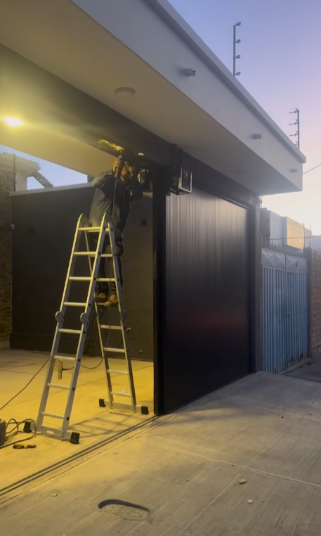
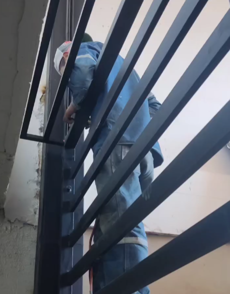
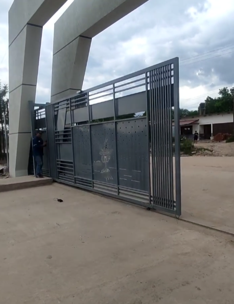

Instalación
Montaje profesional de portones eléctricos y mecánicos con enfoque en seguridad, durabilidad y buen funcionamiento.
Servicios especializados
Acompañamos al cliente desde la evaluación hasta la entrega final del proyecto.
Qué hacemos

Montaje profesional de portones eléctricos y mecánicos con enfoque en seguridad, durabilidad y buen funcionamiento.

Revisión periódica para prolongar la vida útil del sistema y reducir riesgos de fallas.

Solución de fallas mecánicas o eléctricas para recuperar el desempeño correcto del portón.

Conversión o mejora de sistemas para lograr una experiencia más cómoda, moderna y segura.
Nuestro proceso
Beneficios
Preguntas frecuentes
Sí, se puede brindar revisión, ajuste y mantenimiento según el estado del sistema existente.
Sí, evaluamos el funcionamiento del sistema y proponemos la mejor solución técnica disponible.
Sí, ofrecemos alternativas adaptadas al uso residencial, comercial y a proyectos especiales.